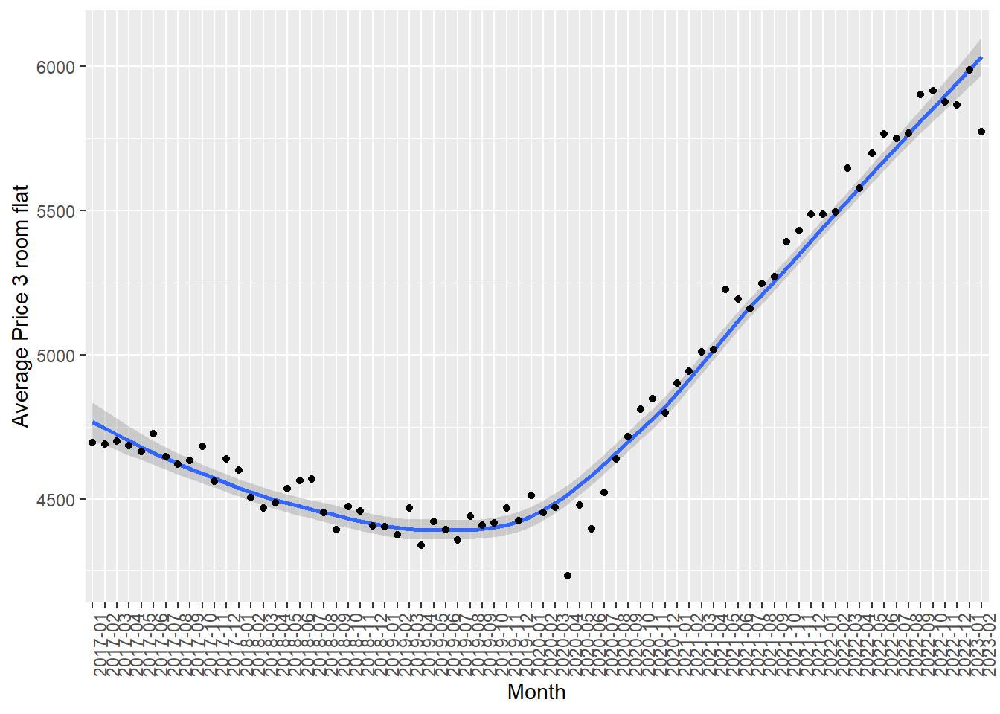
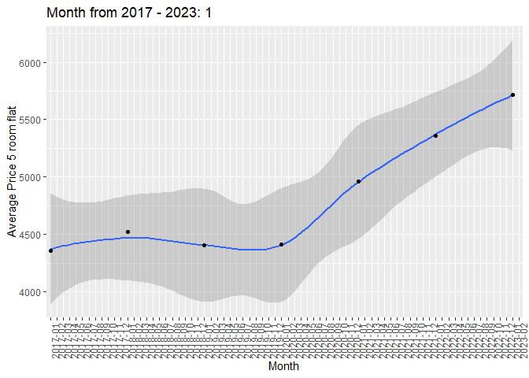

pacman::p_load(readxl)
pacman::p_load(readr)
pacman::p_load(ggstatsplot)
pacman::p_load(tidyverse)
pacman::p_load(gganimate)
pacman::p_load(transformr , gifski)Take Home Exercise 03
The Task
In this take-home exercise, we will study the patterns of the resale prices of public housing property by residential towns and estates in Singapore by using appropriate analytical visualisation techniques learned in Lesson 4: Fundamentals of Visual Analytics.
For the purpose of this study, the focus should be on 3-ROOM, 4-ROOM and 5-ROOM types.
The Data
The data is the transactions data of HDB units in Singapore, spanning across different areas in Singapore. It includes many different types of data, such as types of flats, the address, remaining amount of leases and the resale prices for these units etc….
It can be downloaded from Data.gov.sg for Resale Flat Prices based on registration date between Jan 2017 onwards
https://data.gov.sg/dataset/resale-flat-prices
overall_data <- read_csv("data3/resale-flat-prices-based-on-registration-date-from-jan-2017-onwards.csv")Let’s convert the month column into a month of Month and Year instead.
house_data <- overall_data %>%
separate(month,
into = c("year_no", "month_no"),
sep = "-",
convert = TRUE)house_data$price_per_sqm = house_data$resale_price / house_data$floor_area_sqm
tail(house_data)# A tibble: 6 × 13
year_no month_no town flat_t…¹ block stree…² store…³ floor…⁴ flat_…⁵ lease…⁶
<int> <int> <chr> <chr> <chr> <chr> <chr> <dbl> <chr> <dbl>
1 2023 2 YISHUN 4 ROOM 720 YISHUN… 01 TO … 84 Simpli… 1985
2 2023 2 YISHUN 4 ROOM 867 YISHUN… 04 TO … 84 Simpli… 1988
3 2023 2 YISHUN 5 ROOM 347A YISHUN… 13 TO … 112 DBSS 2013
4 2023 2 YISHUN 5 ROOM 785 YISHUN… 10 TO … 121 Improv… 1988
5 2023 2 YISHUN 5 ROOM 336C YISHUN… 07 TO … 112 Improv… 2015
6 2023 2 YISHUN 5 ROOM 513D YISHUN… 07 TO … 120 3Gen 2018
# … with 3 more variables: remaining_lease <chr>, resale_price <dbl>,
# price_per_sqm <dbl>, and abbreviated variable names ¹flat_type,
# ²street_name, ³storey_range, ⁴floor_area_sqm, ⁵flat_model,
# ⁶lease_commence_dateAnother factors that can affect the prices is the remaining numbers of years on the leases. The more years remaining, the higher the resales prices of the flat.
Let’s convert the columns Remaining Leases of the dataset into numeric values. To achieve this, we can convert the columns into a list of texts
texts = c(house_data$remaining_lease)
numeric_years <- numeric(length(texts))We calculate the length of the list and convert this into equally long list , too
Convert Remaining lease into numeric forms by using a For loop. We will iterate through the 2 created lists to convert texts (eg. “61 years 7 months”) into numeric years by formula YEARS + MONTHS / 12
for (i in 1:length(texts)) {
text <- strsplit(texts[i], " ")[[1]]
years <- as.numeric(text[1])
months <- as.numeric(text[3])
numeric_years[i] <- years + (months / 12)
}Finally we created another columns in our dataset, and we can add the list of numeric years of remaining lease back into our data set as new columns.
house_data$lease_remains = numeric_years Time Series Data Analysis
There is an unanimous agreement among Singaporeans that housing prices, including HDB prices, are ever increasing due to constraint limits of land areas in Singapore. Resale prices of HDB, then, would also follow the same notion.
Let us examine the data to see if the above statement is true.
Let us start with 3 Room dataset for entire Singapore
three_roomdf = overall_data[overall_data$`flat_type` == '3 ROOM',]
three_roomdf$price_per_sqm = three_roomdf$`resale_price` / three_roomdf$`floor_area_sqm`Now we have a time series dataset about the average price per square meter for 3 rooms unit from 2017 to 2023.
The following chunk of code will visualize this time series dataset, to see how much did the average prices of 3 rooms unit HDB have changed in the last 7 years.
three_roomdf1 = three_roomdf[c("month" , "price_per_sqm" )]
threeroom_monthly_avg = three_roomdf1 %>%
group_by(month) %>%
summarise(three_roomdf_avg_monthly = mean(price_per_sqm))
threeroom_monthly_avg# A tibble: 74 × 2
month three_roomdf_avg_monthly
<chr> <dbl>
1 2017-01 4694.
2 2017-02 4690.
3 2017-03 4699.
4 2017-04 4686.
5 2017-05 4663.
6 2017-06 4725.
7 2017-07 4645.
8 2017-08 4620.
9 2017-09 4633.
10 2017-10 4682.
# … with 64 more rowsp = ggplot(threeroom_monthly_avg, aes(x= threeroom_monthly_avg$month, y=threeroom_monthly_avg$three_roomdf_avg_monthly , group = 1)) +
geom_smooth() + geom_point()+
theme(axis.text.x=element_text(angle=90, hjust=1))+
xlab("Month")+ylab("Average Price 3 room flat")
p
As you can see, the average resale price for 3 rooms HDB units do not always increase. From 2017, the average was around $4500 per square meter, it actually decrease up to 2019 before it started to increase again.
Let’s see if the average resales prices for 4 rooms units and 5-rooms units display similar trends.
four_roomdf = overall_data[overall_data$`flat_type` == '4 ROOM',]
five_roomdf = overall_data[overall_data$`flat_type` == '5 ROOM',]four_roomdf$price_per_sqm = four_roomdf$`resale_price` / four_roomdf$`floor_area_sqm`
five_roomdf$price_per_sqm = five_roomdf$`resale_price` / five_roomdf$`floor_area_sqm`4-ROOM average resale prices
four_roomdf1 = four_roomdf[c("month" , "price_per_sqm" )]
fourrooms_monthly_avg2 = four_roomdf1 %>%
group_by(month) %>%
summarise(average_price_sqm2 = mean(price_per_sqm))p1 = ggplot(fourrooms_monthly_avg2, aes(x= fourrooms_monthly_avg2$month, y=fourrooms_monthly_avg2$average_price_sqm2 , group = 1)) +
geom_smooth() + geom_point()+
theme(axis.text.x=element_text(angle=90, hjust=1))+
xlab("Month")+ylab("Average Price 4 room flat")
p1
5-ROOM average resale prices
five_roomdf1 = five_roomdf[c("month" , "price_per_sqm" )]
fiveroom_monthly_avg3 = five_roomdf1 %>%
group_by(month) %>%
summarise(average_price_sqm2 = mean(price_per_sqm))fiveroom_monthly_avg4 <- fiveroom_monthly_avg3 %>%
separate(month,
into = c("year_no", "month_no"),
sep = "-",
convert = TRUE)p2 = ggplot(fiveroom_monthly_avg4, aes(x= fiveroom_monthly_avg3$month, y=fiveroom_monthly_avg3$average_price_sqm2 , group = 1)) +
geom_smooth() + geom_point()+
theme(axis.text.x=element_text(angle=90, hjust=1))+
xlab("Month")+ylab("Average Price 5 room flat")
animate (p2 + transition_time(fiveroom_monthly_avg4$month_no) + labs(title = "Month from 2017 - 2023: {frame_time}")) 
As you can see, 4 rooms and 5 room types of flats have similar trends, from 2017, it was on the downtrend up til 2019 before started picking up and increased until current year 2023.
The difference are, for 4 room and 5 rooms units, there are some months where there are big outliers, and the standard deviation away from the trend-line are much bigger compared to 3-Room type of flats. This means for 4 rooms and 5 room types of flats, there are certain transactions that are priced at much different prices compared to the group’s trend line
Three Sample mean test:
Let’s pull out data for 3 types of flats, 3 ROOM / 4 ROOM and 5 ROOM
df_345 <- subset(house_data, flat_type %in% c("3 ROOM", "4 ROOM", "5 ROOM"))df_345$price_per_sqm = df_345$`resale_price` / df_345$floor_area_sqmp2 <- ggbetweenstats(
data = df_345,
x = flat_type,
y = price_per_sqm,
type = "np",
messages = FALSE
)
p2Across Singapore as the country, the median prices per square meter across 3 types of flats are not that much different from each other. However among 4-Room and 5-Room types of flats, there are more concentrations of transactions on the higher spectrums of price per sqm, above $12,500 / sqm. For 4 room units, there are even transactions that approaching $15,000 /sqm.
AVERGE PRICE PER SQM versus LEASE REMAINS NUMBER OF YEARS
p3 <-ggplot(df_345,
aes(x = lease_remains,
y = price_per_sqm ,
colour = flat_type)) +
geom_point() +
labs(title = "Resale price per square meter verus Remaining lease years",
x = "Remaining Lease (Years)",
y = "Resale price ($psm)",
fill ="Flat type",
caption = "Month From 2017 - 2023: {frame_time}")+
geom_smooth(method="lm",
se = FALSE,
color = "yellow",
formula = y ~ x)+
facet_grid(flat_type ~ .)+
theme(legend.position = "none")+
transition_time(df_345$month_no) + ease_aes('linear')
animate(p3, nframes = 10 , fps = 0.5)The above charts show us that the average prices of HDB units in Singapore against the remaining lease years of the units for at least 3 groups, the 3-ROOM, 4 ROOM and 5 ROOM. While the yellow line shows that there are certain truth when the longer the remaining lease are, the higher the average prices of the units.
However the steepness of the yellow line shows that the correlation is not really extreme, across 40 years between 50 years remaining units and 95 years units, the average price per square meter does not increase that much. In other words, this shows that even average values of HDB does not depreciate due to the lease running down.
Conclusion
In conclusion, HDB in Singapore have not always increased for the last 7 years. Between 2017 to end of 2019, the prices of 3 room, 4 rooms and 5 rooms units have remained relatively stable and even decreased. However it has been a steep increase since 2020 until current 2023, this can be explained due to macro factors: the Covid19 lockdown has severely affected the construction labours force, which lead to shortage in supply of new HDB flats, which in turns, increase the average resale prices so much over the last 3 years.
This exercise has given me a lot more experience in wrangling data and even deployment of a For-loop in R language to modify a column (Remaining leases in years) into numeric values. It has also taught me to utilize bivariate analysis and visualization to draw the relationships between different continuous variables of the dataset. I have also learned how to deploy new package such as gganimate.
Upon inspecting the data, I can see that one area of improvement for myself are on data wrangling because I feel like there can be more insights to be drawn from dataset ( such as “Storey Range” or different planning areas, these factors can affect the average prices of HDB units as well)
On other hands, I still encounter problems modifying and controlling the different packages within ggplots and manipulating the aes() and preparation of data that can fit suitably on X and Y axis of ggplot.